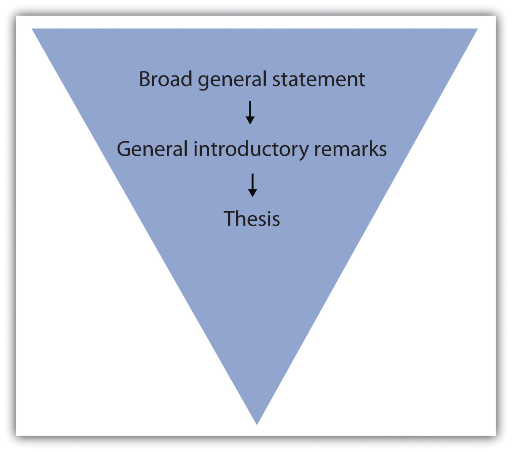

Picture your introduction as a storefront window: You have a certain amount of space to attract your customers (readers) to your goods (subject) and bring them inside your store (discussion). Once you have enticed them with something intriguing, you then point them in a specific direction and try to make the sale (convince them to accept your thesis).
Your introduction is an invitation to your readers to consider what you have to say and then to follow your train of thought as you expand upon your thesis statement.
An introduction serves the following purposes:
First impressions are crucial and can leave lasting effects in your reader’s mind, which is why the introduction is so important to your essay. If your introductory paragraph is dull or disjointed, your reader probably will not have much interest in continuing with the essay.
Your introduction should begin with an engaging statement devised to provoke your readers’ interest. In the next few sentences, introduce them to your topic by stating general facts or ideas about the subject. As you move deeper into your introduction, you gradually narrow the focus, moving closer to your thesis. Moving smoothly and logically from your introductory remarks to your thesis statement can be achieved using a funnel techniqueA writing device that begins with a broad statement and then gradually moves toward the heart of the matter., as illustrated in the diagram in Figure 9.1 "Funnel Technique".
Figure 9.1 Funnel Technique
On a separate sheet of paper, jot down a few general remarks that you can make about the topic for which you formed a thesis in Section 9.1 "Developing a Strong, Clear Thesis Statement".
Immediately capturing your readers’ interest increases the chances of having them read what you are about to discuss. You can garner curiosity for your essay in a number of ways. Try to get your readers personally involved by doing any of the following:
Remember that your diction, or word choice, while always important, is most crucial in your introductory paragraph. Boring diction could extinguish any desire a person might have to read through your discussion. Choose words that create images or express action. For more information on diction, see Chapter 4 "Working with Words: Which Word Is Right?".
In Chapter 8 "The Writing Process: How Do I Begin?", you followed Mariah as she moved through the writing process. In this chapter, Mariah writes her introduction and conclusion for the same essay. Mariah incorporates some of the introductory elements into her introductory paragraph, which she previously outlined in Chapter 8 "The Writing Process: How Do I Begin?". Her thesis statement is underlined.
If you have trouble coming up with a provocative statement for your opening, it is a good idea to use a relevant, attention-grabbing quote about your topic. Use a search engine to find statements made by historical or significant figures about your subject.
In your job field, you may be required to write a speech for an event, such as an awards banquet or a dedication ceremony. The introduction of a speech is similar to an essay because you have a limited amount of space to attract your audience’s attention. Using the same techniques, such as a provocative quote or an interesting statistic, is an effective way to engage your listeners. Using the funnel approach also introduces your audience to your topic and then presents your main idea in a logical manner.
Reread each sentence in Mariah’s introductory paragraph. Indicate which techniques she used and comment on how each sentence is designed to attract her readers’ interest.
It is not unusual to want to rush when you approach your conclusion, and even experienced writers may fade. But what good writers remember is that it is vital to put just as much attention into the conclusion as in the rest of the essay. After all, a hasty ending can undermine an otherwise strong essay.
A conclusion that does not correspond to the rest of your essay, has loose ends, or is unorganized can unsettle your readers and raise doubts about the entire essay. However, if you have worked hard to write the introduction and body, your conclusion can often be the most logical part to compose.
Keep in mind that the ideas in your conclusion must conform to the rest of your essay. In order to tie these components together, restate your thesis at the beginning of your conclusion. This helps you assemble, in an orderly fashion, all the information you have explained in the body. Repeating your thesis reminds your readers of the major arguments you have been trying to prove and also indicates that your essay is drawing to a close. A strong conclusion also reviews your main points and emphasizes the importance of the topic.
The construction of the conclusion is similar to the introduction, in which you make general introductory statements and then present your thesis. The difference is that in the conclusion you first paraphraseTo restate ideas or information from sources using one’s own words and sentence structures., or state in different words, your thesis and then follow up with general concluding remarks. These sentences should progressively broaden the focus of your thesis and maneuver your readers out of the essay.
Many writers like to end their essays with a final emphatic statement. This strong closing statement will cause your readers to continue thinking about the implications of your essay; it will make your conclusion, and thus your essay, more memorable. Another powerful technique is to challenge your readers to make a change in either their thoughts or their actions. Challenging your readers to see the subject through new eyes is a powerful way to ease yourself and your readers out of the essay.
When closing your essay, do not expressly state that you are drawing to a close. Relying on statements such as in conclusion, it is clear that, as you can see, or in summation is unnecessary and can be considered trite.
It is wise to avoid doing any of the following in your conclusion:
Introducing new material in your conclusion has an unsettling effect on your reader. When you raise new points, you make your reader want more information, which you could not possibly provide in the limited space of your final paragraph.
Contradicting or changing your thesis statement causes your readers to think that you do not actually have a conviction about your topic. After all, you have spent several paragraphs adhering to a singular point of view. When you change sides or open up your point of view in the conclusion, your reader becomes less inclined to believe your original argument.
By apologizing for your opinion or stating that you know it is tough to digest, you are in fact admitting that even you know what you have discussed is irrelevant or unconvincing. You do not want your readers to feel this way. Effective writers stand by their thesis statement and do not stray from it.
On a separate sheet of a paper, restate your thesis from Note 9.52 "Exercise 2" of this section and then make some general concluding remarks. Next, compose a final emphatic statement. Finally, incorporate what you have written into a strong conclusion paragraph for your essay.
Collaboration
Please share with a classmate and compare your answers
Mariah incorporates some of these pointers into her conclusion. She has paraphrased her thesis statement in the first sentence.
Make sure your essay is balanced by not having an excessively long or short introduction or conclusion. Check that they match each other in length as closely as possible, and try to mirror the formula you used in each. Parallelism strengthens the message of your essay.
On the job you will sometimes give oral presentations based on research you have conducted. A concluding statement to an oral report contains the same elements as a written conclusion. You should wrap up your presentation by restating the purpose of the presentation, reviewing its main points, and emphasizing the importance of the material you presented. A strong conclusion will leave a lasting impression on your audience.